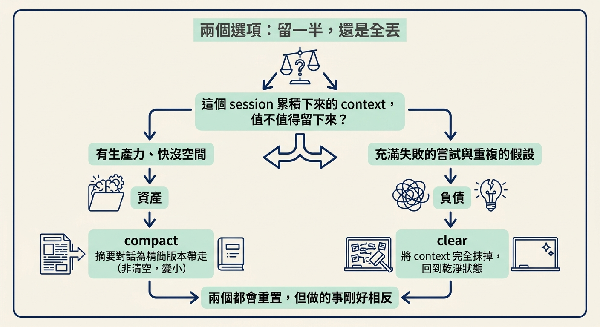
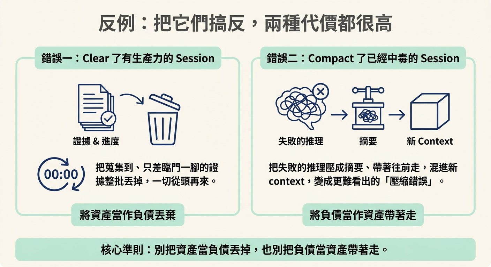

判斷卡住 session 的 context 該留（compact）還是該丟（clear），並說出兩種判斷顛倒各自要付出什麼代價。
上一節你已經認出 agent 在打轉了。接下來最直覺的反應是趕快動手救——重下指令、清掉重來、或把程式碼砍掉。但原文說得很清楚：在這些動作之前，有一個判斷要先做，而且「其他所有事情都跟著它走」。
那個判斷是：這個 session 累積下來的 context，值不值得留下來？
之所以要特別拉出來講，是因為你面前有兩個選項——compact 和 clear——它們都會「重置」，但做的事剛好相反。而選錯的兩種代價都很高，只是高在不同地方。這一節要給你的，就是在那個當下能立刻用上的判準。
遇到卡住的 session，你手上有兩種重置方式。Compact（壓縮）把目前的對話摘要成一個更精簡的版本，讓那份摘要留在 context 裡、帶著往前走。它不是空的，只是變小了。Clear（清空）則把 context 完全抹掉，讓你從一個乾淨的狀態重新開始。
在這裡，該按哪一個完全取決於你對上面那個問題的答案——而答案只有兩種。
| 這個 context 的狀態 | 它是 | 你該做的 | 你會得到 |
|---|---|---|---|
| 有生產力，但快沒空間了 | 資產 | compact | 保留已累積的成果，只把體積縮小 |
| 充滿失敗的嘗試與重複的假設 | 負債 | clear | 丟掉壞掉的推理，回到乾淨狀態 |
原文的判準就是這麼一條：有生產力、只是快沒空間 → context 是資產，就 compact；充滿失敗的嘗試與重複的假設 → context 是負債，就 clear。

要在現場用，你得把「有生產力」和「充滿失敗」換成兩個可以實際問自己的問題：
第一題答「有」，代表這裡有值得帶走的東西，那就是資產，對應到 compact。第二題答「是」，代表這裡累積的主要是壞掉的推理，那就是負債，對應到 clear。
至於工具上的對應動作，就是這兩個：
/compact /clear
這個判斷之所以值得獨立成一節，是因為顛倒過來的代價不對稱，而且很難察覺。
如果你 clear 了一個有生產力的 session：你等於把這個 session 好不容易蒐集到的證據全部丟掉。它可能已經重現了問題、已經縮小了範圍，只差臨門一腳，你卻把它清空，一切得從頭再來。這是對的決定用在錯的對象上，浪費掉的是已經付出的工作。
如果你 compact 了一個已經中毒的 session：你把那些失敗的推理壓成摘要，然後帶著它往前走。這比 clear 丟掉它更糟——因為它變成了一份「壓縮過的錯誤」，混進你接下來的新 context 裡，而因為它已經被濃縮過、看起來更精簡，你反而更難看出它其實是壞的。錯誤沒有消失，只是被藏得更深。
這兩種反例合起來，就是判準真正要防的東西：別把資產當負債丟掉，也別把負債當資產帶著走。

先問一句：「這個 context 是資產，還是負債？」
有累積出有用的證據、只差空間 → 資產 → compact。
內容主要是失敗的嘗試與重複的假設 → 負債 → clear。
判斷顛倒的代價：clear 掉資產＝丟掉已蒐集到的證據；compact 負債＝把壞掉的推理壓縮後帶著走，更難察覺。
認出迴圈之後，先做一個判斷：這個 session 的 context 值不值得留。有生產力但快沒空間，它是資產，用 compact 縮小帶著走；充滿失敗嘗試與重複假設，它是負債，用 clear 丟掉。兩種搞反的代價都很高——清掉資產會丟掉已蒐集的證據，壓縮負債則會把壓縮過的錯誤帶進下一步，反而更難看出來。判斷完之後，剩下的就是照順序執行，那是下一節的事。
判斷做完了，接下來才是實際動手。下一節會把五步升級一次走完，告訴你每一動該做什麼、又會看到什麼，以及最後那個 session 會走向哪一種結局。